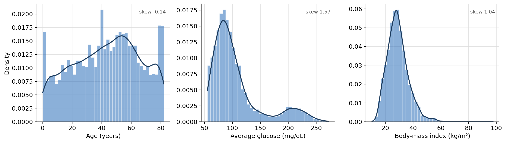
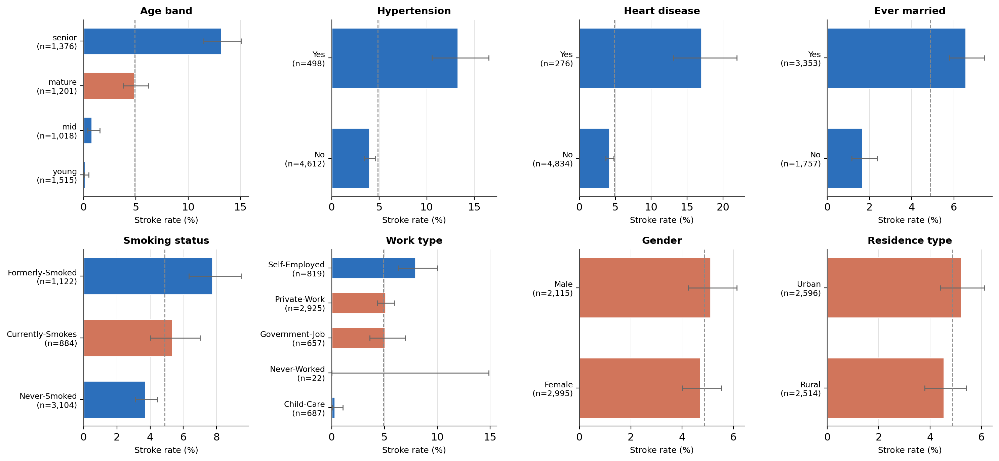
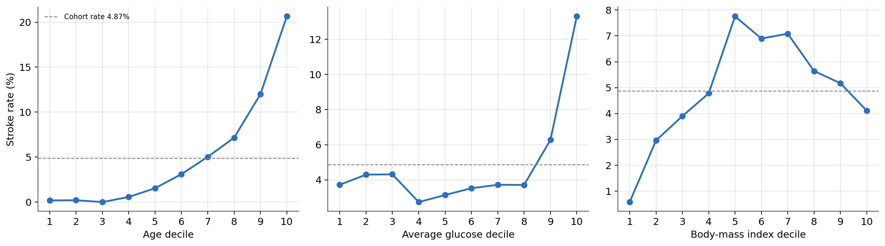
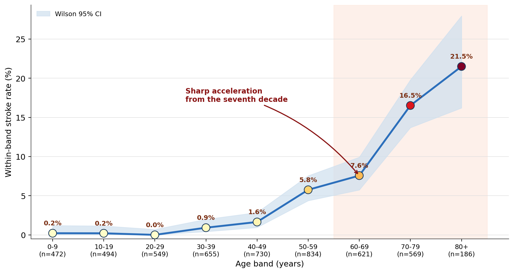
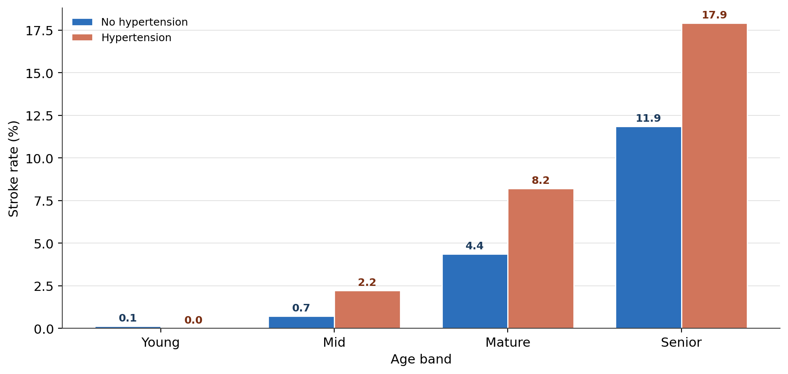
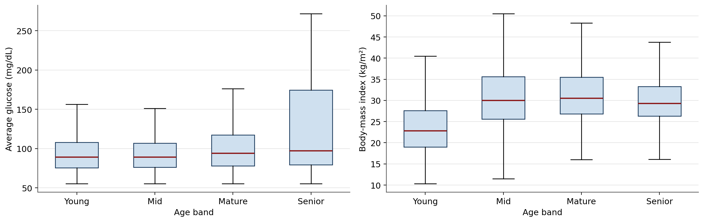
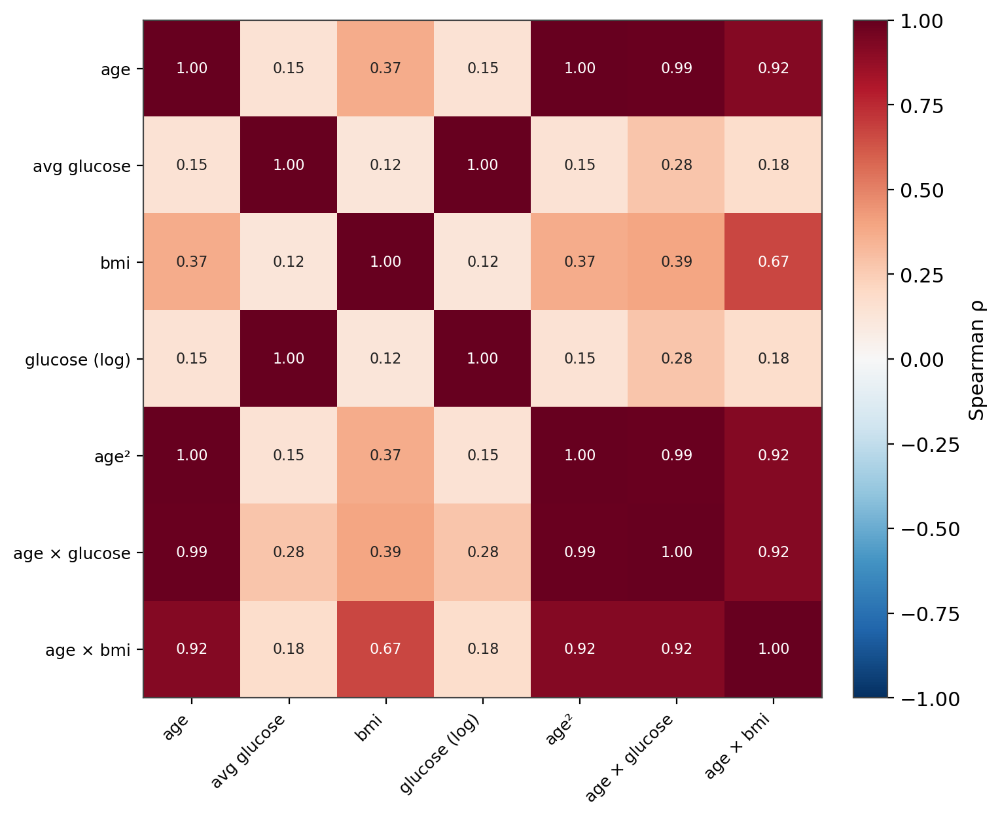
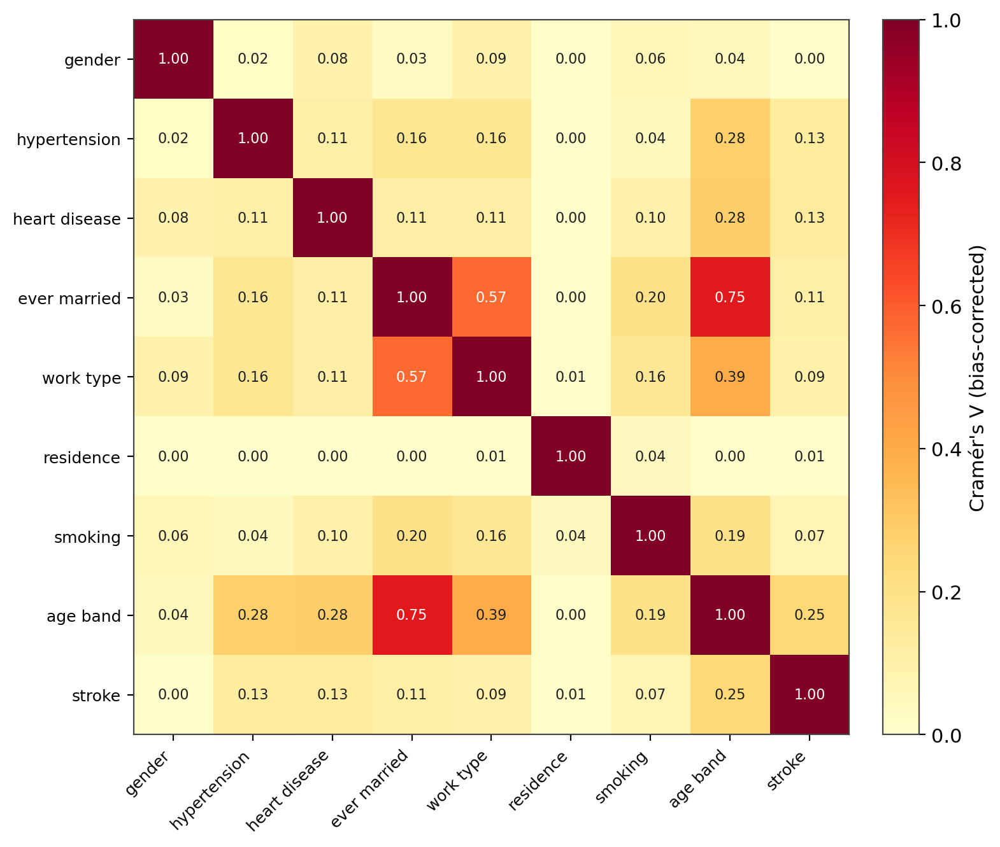
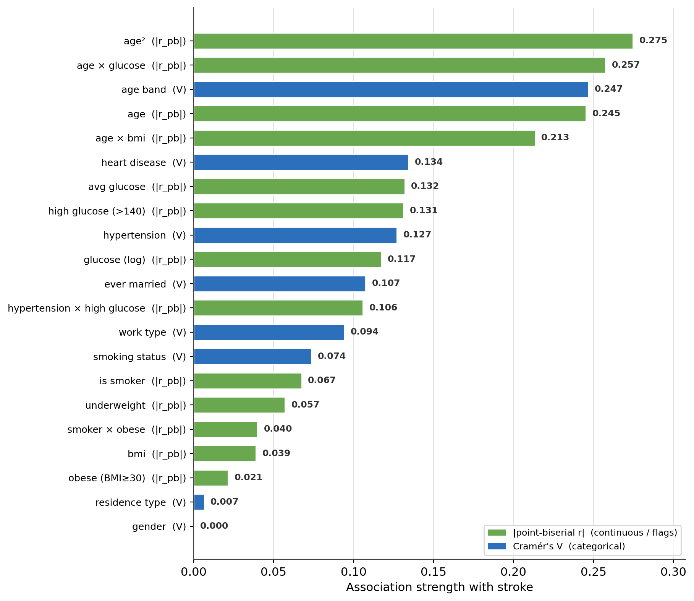

Clinical Feature Profiling for Stroke: Age-Led Stroke-Rate Gradients, Confounder Identification, and Feature-Level Signal Quantification
An exploratory analysis of a 5,110-patient cohort — univariate distributions, within-group rate structure, age stratification, and a full feature-versus-outcome association landscape.
A rate-first exploratory analysis of stroke risk factors in a 5,110-patient cohort (4.87% prevalence). Age dominance: the within-decade stroke rate is near-zero to age 50 then rises to 21.5% past 80. Confounding: marital status tracks age at Cramér’s V = 0.75, explaining its apparent 4-fold rate elevation. Genuine nulls: gender and residence type return V = 0.00 against clean, balanced distributions. Signal ranking: age-derived terms lead every association metric; obesity and smoking sit near the floor.
exploratory data analysis, stroke risk factors, Wilson confidence interval, Mann-Whitney U, rank-biserial correlation, point-biserial correlation, Cramér’s V, confounding, age stratification, decile rate analysis, feature selection, class imbalance, biostatistics, Python
Abstract
This exploratory analysis profiles 24 clinical and engineered features against incident stroke in a cross-sectional cohort of 5,110 patients (249 events; prevalence 4.87%, a 19.5:1 class imbalance). Because the imbalance makes raw counts uninformative, every predictor–outcome comparison is expressed as a within-group rate with a Wilson score 95% confidence interval, supported by Mann–Whitney U tests with rank-biserial effect sizes for continuous predictors, point-biserial correlations, bias-corrected Cramér’s V for categorical associations, and decile rate curves. Age is the dominant signal by every metric: the within-decade stroke rate is below 1% through age 50, then rises to 5.8% (50s), 16.5% (70s), and 21.5% (80+); the four-band age variable carries Cramér’s V = 0.25 against stroke, and the age rank-biserial correlation (|r| = 0.67) is three times the next-strongest continuous predictor. Hypertension and heart disease produce the sharpest binary splits (3.3-fold and 4.1-fold rate elevations, non-overlapping intervals). The apparent 4-fold elevation for ever-married status is an age artefact — marital status correlates with the age band at Cramér’s V = 0.75. Gender and residence type are genuine nulls (V = 0.00 against clean, balanced distributions). Glucose shows a threshold pattern (signal confined to the top two deciles, > 140 mg/dL); BMI is weak and non-monotonic; smoking is confounded and 30.2% imputed. The analysis closes with a ranked feature-level findings table that defines the candidate set for downstream inferential and predictive modelling.
Keywords: exploratory data analysis, stroke, Wilson confidence interval, Mann–Whitney U, Cramér’s V, confounding, age stratification
Introduction
Exploratory analysis of a clinical dataset has one job: to establish, before any model is fitted, which features carry signal against the outcome, how that signal is shaped, and which apparent effects are confounded. This study does that for stroke on a curated 24-feature analytical table of 5,110 patients. It answers four questions in order — how each feature is distributed, how the stroke rate varies within each feature’s levels or range, how the dominant predictor (age) restructures every other comparison, and how the whole feature space ranks by association strength with the outcome.
Four constraints established during data preparation govern every interpretation:
- Class imbalance. 249 stroke-positive patients in 5,110 give a 4.87% positive rate and a 19.5:1 negative-to-positive ratio. This is genuine clinical prevalence in a cross-sectional sample, not a defect. Its consequence is methodological: raw within-group counts are meaningless for comparison, so every predictor–outcome relationship in this study is reported as a within-group rate with an interval estimate.
- BMI imputation. 201 BMI values (3.93%) were modelled during preparation; a sensitivity check precedes any BMI-dependent claim.
- Smoking-status imputation. 1,544 smoking-status values (30.22%) were modelled with a random-forest classifier trained on the observed subpopulation. Every smoking-related result is treated as exploratory.
- Age as the presumptive dominant signal. Age was flagged upstream as the strongest univariate correlate; this analysis confirms it explicitly and then uses age as the primary stratification variable throughout.
Method
Data source
The cohort is the open Stroke Prediction Dataset (fedesoriano, 2021): 5,110 patient records with demographic attributes, lifestyle indicators, medical history, and a binary stroke outcome. It was processed through a medallion-style extract–transform–load pipeline (raw → cleaned → imputed → feature-engineered); all cleaning, imputation, and feature construction was complete before this analysis began, and no transformation is applied here. The analytical table holds 5,110 rows and 24 columns: eleven raw or recoded clinical features, a pre-imputation BMI audit column, eight engineered feature columns (an age band, four flags, a log-glucose term, a squared-age term, an obesity and an underweight indicator), four interaction terms, and the binary outcome plus its integer encoding.
Variables and measures
The outcome is incident stroke (encoded 1/0). Continuous predictors are age, average glucose (mg/dL), BMI (kg/m²), and their engineered relatives: log-glucose, squared age, age × log-glucose, and age × BMI. Categorical predictors are hypertension, heart disease, ever-married status, work type (five levels), residence type, smoking status (three levels), gender, and a four-band age variable (young 0–29 y, mid 30–44 y, mature 45–59 y, senior 60–82 y). Binary flags are current-or-former smoker, obesity (BMI ≥ 30), underweight (BMI < 18.5), elevated glucose (> 140 mg/dL), the joint hypertension-and-elevated-glucose indicator, and the joint smoker-and-obese indicator.
Statistical analysis
Rates and intervals. Within-group stroke rates were computed as proportions and paired with 95% Wilson score confidence intervals (Wilson, 1927), which retain correct coverage for proportions near zero — essential here given several near-zero group rates.
Distribution shape. Each continuous feature was summarised (mean, median, standard deviation, skewness, kurtosis) and tested for normality with the D’Agostino–Pearson omnibus test (D’Agostino & Pearson, 1973). Non-normality across all continuous features motivated non-parametric methods throughout.
Continuous predictors versus outcome. Each continuous predictor was compared between stroke-positive and stroke-negative groups with a Mann–Whitney U test (Mann & Whitney, 1947), reporting the rank-biserial correlation as a standardised effect size on a −1 to +1 scale (Kerby, 2014). Point-biserial correlations (Tate, 1954) against the integer outcome were computed for cross-feature ranking. Decile rate curves (stroke rate within each population decile of the predictor) characterise the shape of the relationship — monotonic, threshold, or non-monotonic.
Categorical associations. Pairwise associations among categorical features, and between each categorical feature and the outcome, were quantified with bias-corrected Cramér’s V (Bergsma, 2013), placing pairs of differing cardinality on a common 0–1 scale. Cohen’s (1988) conventions frame V ≈ .10 as small, .30 as moderate, and ≥ .50 as large for these degrees of freedom. Spearman rank correlations (Spearman, 1904) describe monotonic association among continuous features.
Association landscape. A single ranked view places every feature on one axis of association strength with the outcome: |point-biserial r| for continuous features and flags, Cramér’s V for categorical features.
Software
Analyses used Python with SciPy (Virtanen et al., 2020), NumPy (Harris et al., 2020), and pandas (The pandas development team, 2020); figures were produced with Matplotlib (Hunter, 2007).
Results
Cohort composition
The outcome splits 4,861 stroke-negative (95.13%) against 249 stroke-positive (4.87%). Categorical predictor distributions (Table 1) are otherwise clean: no missing values outside the 201-row BMI audit gap, no zero-variance columns, and only one predictor — work type’s never-worked level (22 patients, 0.43%) — small enough to preclude inference. Gender is moderately skewed toward female patients (58.6%); residence type is near-balanced (50.8% urban); the four age bands each hold between 20% and 30% of the cohort, with young the largest despite being the lowest-risk band.
Table 1
Marginal Distributions of the Categorical Predictors (N = 5,110)
| Predictor | Level | n | % | Level | n | % |
|---|---|---|---|---|---|---|
| Stroke (outcome) | No | 4,861 | 95.13 | Yes | 249 | 4.87 |
| Gender | Female | 2,995 | 58.61 | Male | 2,115 | 41.39 |
| Hypertension | No | 4,612 | 90.25 | Yes | 498 | 9.75 |
| Heart disease | No | 4,834 | 94.60 | Yes | 276 | 5.40 |
| Ever married | Yes | 3,353 | 65.62 | No | 1,757 | 34.38 |
| Residence type | Urban | 2,596 | 50.80 | Rural | 2,514 | 49.20 |
| Work type | Private | 2,925 | 57.24 | Self-employed | 819 | 16.03 |
| ” | Child-care | 687 | 13.44 | Government | 657 | 12.86 |
| ” | Never-worked | 22 | 0.43 | |||
| Smoking status | Never | 3,104 | 60.74 | Formerly | 1,122 | 21.96 |
| ” | Currently | 884 | 17.30 | |||
| Age band | Young (0–29 y) | 1,515 | 29.65 | Senior (60–82 y) | 1,376 | 26.93 |
| ” | Mature (45–59 y) | 1,201 | 23.50 | Mid (30–44 y) | 1,018 | 19.92 |
Note. Smoking status is 30.22% imputed (see Method). One gender value (0.02%) was imputed to female.
Continuous distributions and normality
All five primary continuous features depart sharply from normality (Table 2; D’Agostino–Pearson p < .001 in every case, expected at this sample size). Age is flat and near-symmetric — closer to uniform than Gaussian across the adult range (skew −0.14, kurtosis −0.99). Average glucose is strongly right-skewed (skew 1.57) with a visible secondary mode near 200 mg/dL (Figure 1) — a diabetic subpopulation embedded in the cohort, and the rationale for the > 140 mg/dL flag. BMI is right-skewed and leptokurtic (skew 1.04, kurtosis 3.37), with a tail reaching 97.6. The log transform reduces glucose skew from 1.57 to 0.89 but cannot remove the bimodality, so log-glucose remains non-normal. Because no continuous feature is normal, all subsequent tests are non-parametric.
Table 2
Distributional Summary of the Continuous Features (N = 5,110)
| Feature | M | Mdn | SD | Skew | Kurtosis | Range | Normality p |
|---|---|---|---|---|---|---|---|
| Age (y) | 43.23 | 45.00 | 22.61 | −0.14 | −0.99 | 0.08–82.0 | < .001 |
| Average glucose (mg/dL) | 106.15 | 91.89 | 45.28 | 1.57 | 1.68 | 55.1–271.7 | < .001 |
| BMI (kg/m²) | 28.96 | 28.20 | 7.78 | 1.04 | 3.37 | 10.3–97.6 | < .001 |
| Log-glucose | 4.60 | 4.53 | 0.36 | 0.89 | 0.16 | 4.03–5.61 | < .001 |
| Squared age | 2,379.8 | 2,025.0 | 1,952.3 | 0.61 | −0.73 | 0.01–6,724 | < .001 |
Note. Normality is the D’Agostino–Pearson omnibus test. All five statistics reject normality.
Figure 1
Distributions of the Three Primary Continuous Features

Note. Bars are density-normalised; the curve is a Gaussian kernel-density estimate. The secondary mass in the glucose panel near 200 mg/dL marks an embedded hyperglycaemic subpopulation.
BMI imputation sensitivity
The 201 imputed BMI rows (Table 3) have a higher mean (30.58 vs. 28.89) and a materially narrower spread (SD 5.46 vs. 7.85) than the 4,909 observed rows — the signature of a central-tendency imputation, which pulls values toward the middle and suppresses tails. At 3.9% of the cohort the effect on the full-sample distribution is minor (full-sample M = 28.96, SD = 7.78), so exploratory BMI findings below are described against the complete post-imputation data. The narrowing is flagged for downstream inferential work: BMI odds ratios and adjusted coefficients should be checked against an observed-only sensitivity analysis, since compressed imputed values can mildly inflate apparent group-level associations.
Table 3
BMI Distribution: Observed Versus Imputed Rows
| Slice | n | M | SD | Mdn | IQR |
|---|---|---|---|---|---|
Observed (bmi_raw present) |
4,909 | 28.89 | 7.85 | 28.10 | 23.5–33.1 |
| Imputed | 201 | 30.58 | 5.46 | 30.08 | 27.98–33.01 |
| Full post-imputation | 5,110 | 28.96 | 7.78 | 28.20 | 23.7–33.1 |
Note. The imputed rows are higher on average and roughly 30% less variable than the observed rows.
Categorical predictors versus stroke
Within-group stroke rates (Figure 2, Table 4) separate three genuine signals from three non-signals. Age band is the clearest: a monotonic climb from 0.13% (young) to 13.15% (senior), with no confidence-interval overlap between any pair of adjacent bands — the senior rate is 2.7 times the cohort rate. Hypertension produces the sharpest binary split among clinical conditions (13.25% vs. 3.97%, a 3.3-fold elevation, intervals clear). Heart disease shows the largest absolute gap (17.03% vs. 4.18%, 4.1-fold); its positive-group interval is wide (13.05–21.91%) because only 276 patients are affected, but its lower bound still sits far above the negative group’s upper bound. Ever-married status appears to elevate risk 4-fold (6.56% vs. 1.65%) — an effect the association analysis below shows to be age confounding. Gender (5.11% male vs. 4.71% female) and residence type (5.20% urban vs. 4.53% rural) show fully overlapping intervals and no signal. Work type spans a wide range, but its structure tracks the age composition of each category — self-employed (oldest, 7.94%) highest, child-care (youngest, 0.29%) lowest. Smoking status ranks formerly-smoked (7.75%) above currently-smokes (5.32%) above never-smoked (3.70%), a pattern consistent with former smokers being older; the 30.2% imputation rate keeps this exploratory.
Table 4
Within-Group Stroke Rates for the Categorical Predictors, With Wilson 95% Confidence Intervals
| Predictor | Level | n | Stroke rate | 95% CI | vs. cohort (4.87%) |
|---|---|---|---|---|---|
| Age band | Young | 1,515 | 0.13% | [0.04, 0.48] | far below |
| ” | Mid | 1,018 | 0.79% | [0.40, 1.54] | below |
| ” | Mature | 1,201 | 4.83% | [3.75, 6.19] | at cohort rate |
| ” | Senior | 1,376 | 13.15% | [11.47, 15.04] | far above |
| Hypertension | No | 4,612 | 3.97% | [3.44, 4.57] | below |
| ” | Yes | 498 | 13.25% | [10.55, 16.51] | far above |
| Heart disease | No | 4,834 | 4.18% | [3.65, 4.78] | below |
| ” | Yes | 276 | 17.03% | [13.05, 21.91] | far above |
| Ever married | No | 1,757 | 1.65% | [1.15, 2.36] | below |
| ” | Yes | 3,353 | 6.56% | [5.77, 7.45] | above (age-confounded) |
| Gender | Female | 2,995 | 4.71% | [4.01, 5.53] | overlaps cohort |
| ” | Male | 2,115 | 5.11% | [4.25, 6.13] | overlaps cohort |
| Residence type | Rural | 2,514 | 4.53% | [3.79, 5.42] | overlaps cohort |
| ” | Urban | 2,596 | 5.20% | [4.41, 6.12] | overlaps cohort |
| Work type | Self-employed | 819 | 7.94% | [6.28, 9.99] | above |
| ” | Private | 2,925 | 5.09% | [4.35, 5.95] | overlaps cohort |
| ” | Government | 657 | 5.02% | [3.60, 6.97] | overlaps cohort |
| ” | Child-care | 687 | 0.29% | [0.08, 1.06] | far below |
| ” | Never-worked | 22 | 0.00% | [0.00, 14.87] | uninformative |
| Smoking status | Never | 3,104 | 3.70% | [3.10, 4.43] | below |
| ” | Currently | 884 | 5.32% | [4.02, 7.00] | overlaps cohort |
| ” | Formerly | 1,122 | 7.75% | [6.33, 9.47] | above |
Note. CI = Wilson score interval. Smoking rows are exploratory (30.22% imputed).
Figure 2
Within-Group Stroke Rate by Level for Eight Categorical Predictors (Wilson 95% CI)

Note. Dashed line marks the 4.87% cohort rate. Blue = confidence interval clears the cohort rate; red = interval straddles it. Bars are sorted within panel by rate.
Continuous predictors versus stroke
Ranking by rank-biserial effect size (Table 5): age (|r| = 0.67) ≫ average glucose (|r| = 0.22) = log-glucose (0.22) > BMI (0.14). Only age carries a large effect; glucose and BMI are real but modest. The decile rate curves (Figure 3) show three distinct shapes. Age is cleanly monotonic — near-zero through the third decile, then rising to 20.65% in the top decile (ages 75–82). Glucose is a threshold relationship — deciles 1–8 (55–120 mg/dL) all sit near the cohort rate, and the signal appears only in decile 9 (6.27%) and decile 10 (13.31%). BMI is non-monotonic — an inverted U peaking in the middle deciles (7.75% at BMI 27–28) and declining at both extremes; the low rate in the bottom decile reflects the youth of underweight patients, not protection. Log-glucose reproduces the glucose U statistic and p-value exactly, because a monotone transform leaves rank-based tests unchanged.
Table 5
Continuous Predictors Versus Stroke: Mann–Whitney U and Correlations
| Predictor | U | p | Rank-biserial r | Point-biserial r | Rate-curve shape |
|---|---|---|---|---|---|
| Age | 1,010,125.5 | < .001 | −0.669 | .245 | monotonic |
| Squared age | — | — | — | .275 | monotonic (accelerating) |
| Age × log-glucose | — | — | — | .258 | monotonic |
| Age × BMI | — | — | — | .213 | monotonic |
| Average glucose | 739,150.0 | < .001 | −0.221 | .132 | threshold (top 2 deciles) |
| Log-glucose | 739,150.0 | < .001 | −0.221 | .117 | threshold (identical ranks) |
| BMI | 692,674.5 | < .001 | −0.145 | .039 | non-monotonic (inverted U) |
Note. Rank-biserial r is signed by the test’s group ordering; magnitude is what matters. All associations are significant at α = .05. Engineered age terms are shown with point-biserial r only.
Figure 3
Stroke Rate by Population Decile of Age, Average Glucose, and BMI

Note. Dashed line marks the 4.87% cohort rate. The three shapes — monotonic, threshold, inverted-U — are the qualitative signatures that drive feature-engineering choices (a squared-age term, a glucose threshold flag).
Age-stratified analysis
Resolving age to ten-year bands (Figure 4) sharpens the gradient the four-band view compresses: the within-decade stroke rate is at or below 1% through the fifth decade (0.9% at 30–39, 1.6% at 40–49), then accelerates — 5.8% (50–59), 7.6% (60–69), 16.5% (70–79), 21.5% (80+). The acceleration point is the sixth-to-seventh decade transition, and the senior band alone (n = 1,376) carries 181 of 249 events. Stratifying by hypertension within age band (Figure 5, Table 6) shows an additive pattern: hypertension raises the rate within every band, and the absolute elevation is largest where the baseline is already high (+6.1 points in the senior band, +3.9 in mature, +1.5 in mid). The young band has only 11 hypertension-positive patients and cannot support inference.
Within-band distributions of the two key continuous predictors (Figure 6) reveal how age carries co-varying risk. The senior band’s average-glucose interquartile range (95.3 mg/dL) is roughly three times that of the other bands (30–40 mg/dL) and extends deep into the hyperglycaemic range — older patients are over-represented in the high-age and high-glucose risk dimensions simultaneously. BMI shows the opposite: the senior band has the most compressed BMI distribution (IQR 7.0) while the young band is the most dispersed and outlier-heavy (skew 2.04). Age is therefore not one predictor among many but the axis around which the others must be read.
Table 6
Stroke Rate by Age Band and Hypertension Status
| Age band | No hypertension | Hypertension | Absolute gap | ||
|---|---|---|---|---|---|
| rate | n | rate | n | (points) | |
| Young | 0.13% | 1,504 | 0.00% | 11 | — (n too small) |
| Mid | 0.72% | 973 | 2.22% | 45 | +1.5 |
| Mature | 4.36% | 1,055 | 8.22% | 146 | +3.9 |
| Senior | 11.85% | 1,080 | 17.91% | 296 | +6.1 |
Note. The elevation from hypertension is roughly constant in fold-change but grows in absolute points as the baseline rate rises — an additive interaction with age.
Figure 4
Within-Decade Stroke Rate Across the Age Range (Wilson 95% CI)

Note. Marker fill encodes rate. Shaded band = Wilson 95% CI; shaded region = the post-60 acceleration zone. Ten-year resolution exposes an inflection the four-band variable hides.
Figure 5
Stroke Rate by Age Band, Split by Hypertension Status

Note. The young/hypertension cell (n = 11) is shown for completeness but carries no inferential weight.
Figure 6
Average Glucose and BMI Distributions Within Each Age Band

Note. Outliers suppressed for legibility. The senior band concentrates high-age and high-glucose risk together; BMI variance moves the opposite way.
Association structure
Among continuous features (Figure 7), the high Spearman correlations are by design — age with squared age (ρ = 1.00), average glucose with log-glucose (ρ = 1.00), age with age × glucose (ρ = 0.99) and age × BMI (ρ = 0.92). These are engineered redundancies to be resolved by feature selection, not multicollinearity to be pruned blindly. The only notable empirical correlation is age with BMI (ρ = 0.37) — older patients here carry higher BMI.
Among categorical features (Figure 8, Table 7), the dominant pair is ever-married × age band (Cramér’s V = 0.75) — a large association confirming marital status functions as an age proxy in this cohort, and the explanation for its apparent stroke-rate elevation in Table 4. Work type also tracks the age band (V = 0.39), as do heart disease (V = 0.28) and hypertension (V = 0.28) — clinical conditions accumulate with age. Against the outcome itself, the ranking is age band (V = 0.25, moderate) > heart disease (0.13) > hypertension (0.13) > ever-married (0.11), with gender and residence type at exactly 0.00 and smoking at 0.07.
The consolidated association landscape (Figure 9) places every feature on one axis. The top five are all age-derived (squared age 0.28, age × glucose 0.26, age band 0.25, age 0.25, age × BMI 0.21); a middle tier of cardiovascular and glucose features sits between 0.11 and 0.13; obesity (0.02), residence type (0.01), and gender (0.00) form the floor.
Table 7
Selected Cramér’s V Associations (Bias-Corrected)
| Pair | Cramér’s V | Reading |
|---|---|---|
| Ever married × age band | 0.750 | large — marital status is an age proxy |
| Ever married × work type | 0.567 | large — overlapping life-stage categories |
| Work type × age band | 0.391 | moderate |
| Heart disease × age band | 0.282 | moderate — conditions accrue with age |
| Hypertension × age band | 0.278 | moderate |
| Age band × stroke | 0.247 | moderate — strongest categorical predictor |
| Heart disease × stroke | 0.134 | small |
| Hypertension × stroke | 0.127 | small |
| Ever married × stroke | 0.107 | small (age-confounded) |
| Work type × stroke | 0.094 | negligible |
| Smoking status × stroke | 0.074 | negligible (and 30% imputed) |
| Residence type × stroke | 0.007 | null |
| Gender × stroke | 0.000 | null |
Note. Cohen’s conventions: V ≈ .10 small, .30 moderate, ≥ .50 large at these degrees of freedom.
Figure 7
Spearman Correlation Matrix of the Continuous and Engineered Features

Note. The ρ ≈ 1 blocks are engineered relationships (a squared term, a log term, two products of age). Age × BMI (ρ = 0.37) is the only substantial empirical correlation.
Figure 8
Bias-Corrected Cramér’s V Matrix of the Categorical Features and the Outcome

Note. The ever-married × age-band cell (0.75) is the confounding structure behind the marital-status rate elevation in Table 4.
Figure 9
Every Feature Ranked by Association Strength With Stroke

Note. Green = |point-biserial r| (continuous features and flags); blue = Cramér’s V (categorical features). The two metrics are not identical in scale but rank features consistently: age-derived terms lead, obesity and gender sit at the floor.
Interaction terms
The four engineered interaction terms (Table 8) split cleanly. The two continuous ones carry meaningful signal — age × log-glucose (point-biserial r = 0.26) marginally exceeds raw age (0.25), and age × BMI (0.21) lifts the weak BMI signal by weighting it toward older patients. The two binary ones are weaker but interpretable: the joint hypertension-and-elevated-glucose flag (178 patients, 3.5%) marks the highest single-point categorical rate in the whole analysis — 16.85% versus 4.44% — while the joint smoker-and-obese flag is the weakest term (r = 0.04) and additionally inherits the smoking imputation caveat.
Table 8
Interaction Terms Versus Stroke
| Term | Definition | Point-biserial r | p | Rate contrast |
|---|---|---|---|---|
| Age × log-glucose | continuous product | .258 | < .001 | — |
| Age × BMI | continuous product | .213 | < .001 | — |
| Hypertension × high glucose | both conditions present (n = 178) | .106 | < .001 | 16.85% vs. 4.44% (3.8×) |
| Smoker × obese | both conditions present (n = 926) | .040 | .004 | 6.70% vs. 4.47% (1.5×) |
Note. The hypertension × high-glucose flag produces the highest observed within-group rate in the categorical analysis.
Consolidated feature-level findings
Table 9 collapses the results above into one decision surface. Three exclusion candidates emerge for downstream modelling: gender (V = 0.00) and residence type (V = 0.01) are genuine nulls against clean, balanced distributions; log-glucose is a redundant monotone transform of average glucose (ρ = 1.00, identical ranks). Age and its engineered relatives are the credentialled signal; hypertension, heart disease, and the hypertension × glucose flag are the credentialled clinical predictors; BMI, smoking, and their flags are retained only as weak or confounded candidates.
Table 9
Feature-Level Findings Summary
| Feature | Type | Effect size vs. stroke | Direction / verdict |
|---|---|---|---|
| Age | continuous | rank-biserial |r| = 0.67 (large); rₚᵦ = .25 | monotonic; dominant signal |
| Squared age | continuous | rₚᵦ = .27 | accelerating age term; select against raw age |
| Age × log-glucose | interaction | rₚᵦ = .26 | strongest engineered term |
| Age × BMI | interaction | rₚᵦ = .21 | lifts weak BMI signal |
| Age band | ordinal | V = 0.25 (moderate) | strongest categorical predictor; mandatory stratifier |
| Heart disease | binary | V = 0.13; 17.03% vs. 4.18% | 4.1× rate elevation; small positive group (n = 276) |
| Average glucose | continuous | rank-biserial |r| = 0.22; rₚᵦ = .13 | threshold effect above ~140 mg/dL |
| High-glucose flag | binary flag | rₚᵦ = .13 | captures the threshold; > 140 mg/dL |
| Hypertension | binary | V = 0.13; 13.25% vs. 3.97% | 3.3× rate elevation; sharpest binary split |
| Hypertension × high glucose | interaction | rₚᵦ = .11; 16.85% vs. 4.44% | highest single-group rate; retain |
| Ever married | binary | V = 0.11; 6.56% vs. 1.65% | apparent 4× elevation is age confounding (V vs. age band = 0.75) |
| Work type | multi-level | V = 0.09 | gradient tracks age composition |
| Smoking status | multi-level | V = 0.07; formerly 7.75% | exploratory only — 30.22% imputed |
| BMI | continuous | rank-biserial |r| = 0.14; rₚᵦ = .04 | weak, non-monotonic; 201 imputed |
| Smoker × obese | interaction | rₚᵦ = .04; 6.70% vs. 4.47% | weakest term; imputation caveat |
| Residence type | binary | V = 0.01 | null — exclude |
| Gender | binary | V = 0.00 | null — exclude |
Note. rₚᵦ = point-biserial correlation with the integer outcome. Odds ratios and adjusted effects are deferred to the inferential study.
Discussion
Age is the organising variable
Age leads every metric applied — the largest rank-biserial correlation (three times the next predictor), the strongest categorical V against the outcome, and the top five slots in the consolidated association landscape once its engineered relatives are counted. The ten-year gradient locates the clinically relevant inflection at the sixth-to-seventh decade, and the within-band distributions show why age is so dominant: the senior band concentrates high-glucose risk alongside high-age risk. The practical consequence is that age is not an ordinary covariate to include but the axis every other comparison must be read against, and any downstream feature-importance analysis that does not hold age fixed will misattribute age’s signal to its correlates.
Confounding: the marital-status result
Ever-married status shows a clean 4-fold within-group rate elevation in isolation (6.56% vs. 1.65%), which a naive read would treat as a risk factor. The categorical association matrix contradicts that read directly: marital status correlates with the age band at Cramér’s V = 0.75, the largest association in the dataset. The never-married group is predominantly young, and its low stroke rate reflects age, not marital state. This is the single clearest confounding structure in the cohort and the reason an inferential study must age-adjust marital status before quantifying any effect.
Genuine nulls
Gender and residence type both return Cramér’s V = 0.00 against the outcome, on top of clean, balanced marginal distributions and fully overlapping rate intervals. These are not artefacts of small samples or skewed groups — they are informative negatives, and both features are exclusion candidates for downstream modelling. The smoking-status association (V = 0.07) is directionally plausible but rests on 30.2% imputed values and cannot be promoted past exploratory.
Shape matters as much as strength
The three continuous predictors carry three different relationship shapes: age is monotonic, glucose is a threshold effect confined to its top two deciles, and BMI is a weak inverted U. Those shapes, not just the effect sizes, justify the engineered features — a squared-age term for the acceleration, a > 140 mg/dL flag for the glucose threshold — and they tell a downstream modeller where linear terms will and will not suffice.
Limitations
The study is cross-sectional and exploratory: it quantifies association and shape, not causation, and reports no adjusted effects. Several groups are small (heart-disease positives n = 276; hypertension × glucose n = 178; never-worked n = 22), producing wide intervals or, in one case, no possible inference. Smoking is 30.2% imputed and BMI 3.9% imputed, with the imputed BMI values measurably narrower than observed ones. All engineered interaction terms are near-collinear with age by construction and must be selected among, not stacked.
Conclusion
In this 5,110-patient cohort, age and its engineered relatives are the dominant stroke signal; hypertension, heart disease, and co-occurring hypertension-and-hyperglycaemia are the credentialled clinical predictors; marital status is an age artefact; and gender and residence type carry no signal at all. The feature-level findings table is the handoff: it defines which features enter inferential odds-ratio analysis and predictive modelling, and which are set aside on the evidence assembled here.
References
Bergsma, W. (2013). A bias-correction for Cramér’s V and Tschuprow’s T. Journal of the Korean Statistical Society, 42(3), 323–328. https://doi.org/10.1016/j.jkss.2012.10.002
Cohen, J. (1988). Statistical power analysis for the behavioral sciences (2nd ed.). Lawrence Erlbaum Associates.
D’Agostino, R., & Pearson, E. S. (1973). Tests for departure from normality: Empirical results for the distributions of b₂ and √b₁. Biometrika, 60(3), 613–622. https://doi.org/10.1093/biomet/60.3.613
fedesoriano. (2021). Stroke prediction dataset [Data set]. Kaggle. https://www.kaggle.com/datasets/fedesoriano/stroke-prediction-dataset
Harris, C. R., Millman, K. J., van der Walt, S. J., Gommers, R., Virtanen, P., Cournapeau, D., Wieser, E., Taylor, J., Berg, S., Smith, N. J., Kern, R., Picus, M., Hoyer, S., van Kerkwijk, M. H., Brett, M., Haldane, A., del Río, J. F., Wiebe, M., Peterson, P., … Oliphant, T. E. (2020). Array programming with NumPy. Nature, 585, 357–362. https://doi.org/10.1038/s41586-020-2649-2
Hunter, J. D. (2007). Matplotlib: A 2D graphics environment. Computing in Science & Engineering, 9(3), 90–95. https://doi.org/10.1109/MCSE.2007.55
Kerby, D. S. (2014). The simple difference formula: An approach to teaching nonparametric correlation. Comprehensive Psychology, 3, Article 1. https://doi.org/10.2466/11.IT.3.1
Mann, H. B., & Whitney, D. R. (1947). On a test of whether one of two random variables is stochastically larger than the other. The Annals of Mathematical Statistics, 18(1), 50–60. https://doi.org/10.1214/aoms/1177730491
Spearman, C. (1904). The proof and measurement of association between two things. The American Journal of Psychology, 15(1), 72–101. https://doi.org/10.2307/1412159
Tate, R. F. (1954). Correlation between a discrete and a continuous variable: Point-biserial correlation. The Annals of Mathematical Statistics, 25(3), 603–607. https://doi.org/10.1214/aoms/1177728730
The pandas development team. (2020). pandas-dev/pandas: Pandas (Version latest) [Computer software]. Zenodo. https://doi.org/10.5281/zenodo.3509134
Virtanen, P., Gommers, R., Oliphant, T. E., Haberland, M., Reddy, T., Cournapeau, D., Burovski, E., Peterson, P., Weckesser, W., Bright, J., van der Walt, S. J., Brett, M., Wilson, J., Millman, K. J., Mayorov, N., Nelson, A. R. J., Jones, E., Kern, R., Larson, E., … SciPy 1.0 Contributors. (2020). SciPy 1.0: Fundamental algorithms for scientific computing in Python. Nature Methods, 17, 261–272. https://doi.org/10.1038/s41592-019-0686-2
Wilson, E. B. (1927). Probable inference, the law of succession, and statistical inference. Journal of the American Statistical Association, 22(158), 209–212. https://doi.org/10.2307/2276774
Analytical workflow and figures by the author. This is an exploratory study; associations reported here are not adjusted for confounding and do not support causal claims.